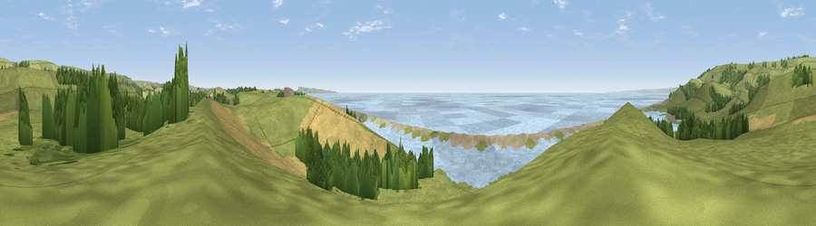

Viewpoint near Abbotsbury
#3547 in England · top 12% of its area beats it · near AbbotsburyThe view, rendered

A 360° render of this exact spot computed from the terrain model, tree cover and land cover — summer colours, afternoon light, calibrated against photographs of famous viewpoints. Real trees, hedges and buildings will differ in detail.
The panorama
Grey silhouette: terrain skyline in each direction (720 bearings, Earth curvature and refraction included). Dashed green: skyline with trees (+15 m) and buildings (+8 m) as obstacles. Blue strip: how far the ground is visible on each bearing.
Where the view opens
Wedge length = distance to the farthest visible ground on that bearing (vegetation-aware). Rings at 10, 25 and 50 km.
What fills the view
51% grassland · 23% water · 12% cropland · 10% woodland · 3% bare ground
Angular shares of the visible panorama (visual magnitude), not map area. Landscape diversity 0.57 (0–1 Shannon).
Key numbers
More beautiful places nearby
The staircase of upgrades: each row has a higher view potential than everything closer. Driving times are estimates from straight-line distance, calibrated against real road routing — check an actual route before setting out.
| Place | Direction | Drive | Score |
|---|---|---|---|
| Viewpoint near Abbotsbury | WNW · 3 km | ~6 min | 74.7 |
| Viewpoint near Abbotsbury | N · 3 km | ~7 min | 80.9 |
| Viewpoint near Abbotsbury | NW · 3 km | ~8 min | 83.8 |
| Viewpoint near Abbotsbury | NW · 3 km | ~8 min | 85.1 |
| Viewpoint near Abbotsbury | NW · 4 km | ~9 min | 89.0 |
| Viewpoint near West Bexington | NW · 5 km | ~11 min | 89.5 |
| The Knoll | NW · 7 km | ~14 min | 91.0 |
50.64903, -2.58588 · source: screening · position refined by local search. Computed location — check access rights before visiting.